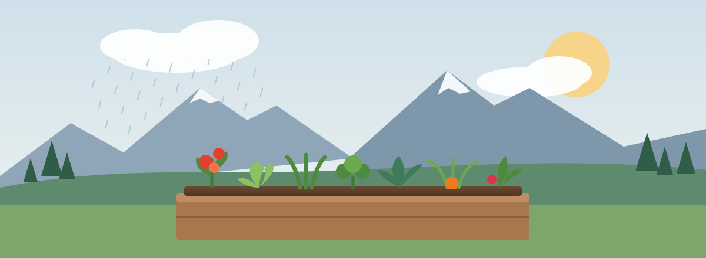

Plant on Northwest time.
Enter your ZIP or pick a city for local frost dates, what to plant this week, and a full-year planting calendar for Oregon and Washington gardens.
New to gardening? Start with these 5 easy crops
They're forgiving, quick and hard to kill. Tap one for planting dates and step-by-step instructions, or read the beginner's guide.
 RadishesReady in about four weeks, so you see results fast.
RadishesReady in about four weeks, so you see results fast. LettuceGrows in cool weather and a bit of shade, and you can pick it for weeks.
LettuceGrows in cool weather and a bit of shade, and you can pick it for weeks. Bush beansBig seeds that are easy to plant, and one sowing feeds you all summer.
Bush beansBig seeds that are easy to plant, and one sowing feeds you all summer. Zucchini and summer squashTwo plants are plenty. It almost always produces.
Zucchini and summer squashTwo plants are plenty. It almost always produces. KaleShrugs off Northwest cold and keeps going into winter.
KaleShrugs off Northwest cold and keeps going into winter.
When to plant each crop
Pick a crop to see its planting dates in all 30 Oregon and Washington cities.
Cool-season crops
Plant in early spring, and many again for fall. They handle light frost.
 PeasEasy
PeasEasy- RadishesEasy
 SpinachModerate
SpinachModerate- LettuceEasy
 OnionsModerate
OnionsModerate CarrotsModerate
CarrotsModerate BeetsModerate
BeetsModerate- KaleEasy
 BroccoliModerate
BroccoliModerate CabbageModerate
CabbageModerate Swiss chardEasy
Swiss chardEasy PotatoesEasy
PotatoesEasy CilantroEasy
CilantroEasy- ParsleyEasy
 DillEasy
DillEasy
Warm-season crops
Plant after the last frost once the soil warms. Frost kills them.
- Bush beansEasy
 Sweet cornModerate
Sweet cornModerate CucumbersModerate
CucumbersModerate- Zucchini and summer squashEasy
 Winter squash and pumpkinsModerate
Winter squash and pumpkinsModerate TomatoesModerate
TomatoesModerate PeppersTricky here
PeppersTricky here BasilModerate
BasilModerate DahliasModerate
DahliasModerate
Berries
Plant once and pick for years. Hardy through Northwest winters.


Planted in fall
Goes in the ground in autumn and is harvested the next summer.

Guides for Northwest gardeners
- The Best Tomatoes for Cool Northwest SummersWhich tomato varieties actually ripen in Portland, Seattle and the coast, and how to give them the heat they need.
- Fall and Winter Vegetable Gardening West of the CascadesHow to keep harvesting kale, carrots, garlic and greens through a mild Northwest winter, and when to plant for it.
- Gardening in Bend and Central Oregon's Short SeasonHow to grow vegetables where frost can come almost any month: what to plant, when, and how to protect it.
Why Northwest planting dates are different
National planting charts key everything off the last frost date. In much of the Pacific Northwest that's only half the story. Portland's typical last frost is in mid-March, yet tomatoes planted then would sit in cold, wet soil for two months. Oregon State University Extension advises waiting until soil is consistently above 70°F for tomatoes, squash and peppers.
East of the Cascades it flips. At Redmond, the NOAA station nearest Bend, the typical last frost isn't until June, and the frost-free season is closer to three months than eight. Rainline Garden combines both: NOAA frost records for each area, and regional timing from OSU Extension for when the soil is actually ready.